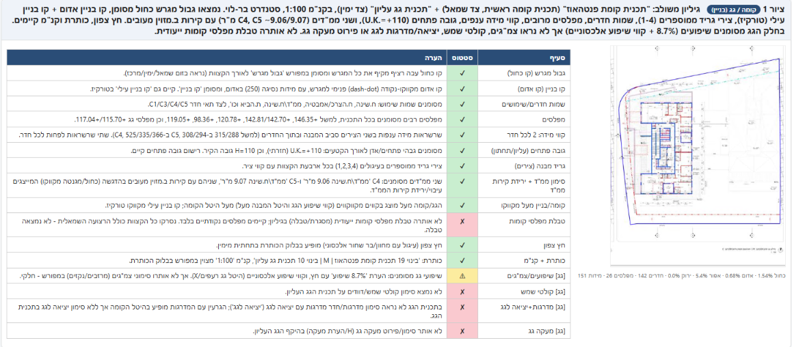

עם קבצי רוויט, אוטוקאד, תיקיות בפרויקט — הוא חושב הרבה, יוצא עם כל מיני דברים, ולפעמים פשוט לא מגיע לשום מקום.
זה לא אשמתך. וזה לא שקלוד חלש.
הבעיה היא דלת אחת — הדרך שדרכה נכנסת אליו.
למי זה רלוונטי: אדריכלים ומתכנני ערים שרוצים שקלוד יעבוד עם הקבצים שלהם — לא רק לענות על שאלות.
להרשמה לקורס ←כשעובדים עם אפליקציית הדסקטופ הרגילה, קלוד לא מחובר ישירות לתוכנה. אז במקום לכתוב קוד שעושה את העבודה, הוא הולך בדרך המסובכת — שולט פיזית על המחשב: מזיז עכבר, לוחץ על כפתורים בממשק, מקליד פקודות.
הוא כן פועל — אבל בדרך גמלונית. זה נשמע מרשים, ובפועל יוצא איטי ושביר. נכשל כל פעם שחלון קצת זז, שתוכנה קצת אטית, שמשהו קטן לא בדיוק במקום שהוא ציפה. שעות של ניסיון. תוצאה אפסית.
לסדר קבצים, לשנות שמות, להמיר PDFs, להוציא מידע מרשימת DWFs — מה שלא יהיה.
הוא חושב. מאריך. ואחרי כל זה — מוציא לך קובץ טקסט. הסביבה שלו מוגבלת, אז במקום להריץ את הכלי בעצמו, הוא כותב סקריפט ומבקש שאתה תפתח, תריץ, ותקווה שיעבוד.
הוא כן יכול לעבוד — אבל בדרך עקיפה: כתב לך הוראות לביצוע במקום לבצע ישר. ואתה קיבלת עוד דבר לנהל.
זה בדיוק ההפך מחיסכון בזמן.
אפליקציית הדסקטופ עובדת מצוין למה שהיא נועדה: שיחה, כתיבה, ניסוח, עזרה בחשיבה. מי שכותב מסמכים, מכין מצגות, שואל שאלות — יצא בסדר.
אבל למי שרוצה שקלוד יעבוד עם קבצים מקומיים, יריץ כלים, יפעל על תיקיות, יחבר למאגרי מידע — האפליקציה הזו היא הדלת הלא נכונה.
קלוד יושב בתוכה, רחוק מהסביבה שאתה עובד בה — הקבצים שלך, התוכנות שלך, הנתיבים שלך. הוא כן יכול לפעול על המחשב — אבל בדרך עקיפה ומסובכת: שליטה פיזית בעכבר, או כתיבת סקריפט שתריץ בעצמך. הוא עובד מסביב לחסם במקום ישר, ולכן לפעמים מפספס.
הכלי שמספק את הגישה האמיתית הוא VS Code.
VS Code הוא עורך קוד מקצועי של מיקרוסופט, חינמי, שבו יש שילוב ישיר עם קלוד קוד. כשעובדים שם — המשחק שונה לחלוטין.
ב-VS Code, קלוד רואה אוטומטית אילו קבצים פתוחים, קורא שורות ספציפיות, מזהה שגיאות לבד. הוא בפנים — לא מסתכל מבחוץ. הפתרון מדויק כי הוא מבוסס על מה שבאמת קיים אצלך.
באפליקציית הדסקטופ הוא מבודד. צריך שתעתיק לו הכל ידנית. וכשחסר לו מידע, הוא לפעמים ממציא פתרונות שנשמעים הגיוניים אבל לא עובדים — "הזיות".
כדי שקלוד יעבוד עם הקבצים שלך, צריך לחבר אליו "כלים" — גשרים לנתונים, לתיקיות, למאגרים חיצוניים.
VS Code הוא מוצר של מיקרוסופט, יציב ומגובה. קלוד קוד רץ בתוכו בצורה אמינה.
אפליקציית הדסקטופ — קריסות לא מוסברות, Windows ARM שנסגר פתאום, Mac שמבקש אימות מחדש. לא כל הזמן, אבל מספיק כדי להפריע לעבודה אמיתית.
ב-VS Code עם קלוד קוד, משלמים לפי שימוש — על מה שמשתמשים בו בפועל. אפשר אפילו להתחיל עם מודלים חינמיים.
מנוי אפליקציית הדסקטופ — תשלום חודשי קבוע בכל מקרה, ובעבודה אינטנסיבית יש מגבלות שנועלות ומחייבות המתנה.
ב-VS Code יש "Plan Mode" — קלוד מציג תוכנית, אתה מאשר לפני שהוא עושה כלום. ויש "Auto Mode" — הוא רץ לבד. אתה בוחר.
באפליקציית הדסקטופ — אישורים נוקשים, פחות גמישות, פחות שליטה בזרימת העבודה.
כדי שקלוד יוכל לפעול על המחשב שלך — לקרוא קבצים, לכתוב לתיקיות, להריץ פקודות, להתחבר לשירותים חיצוניים — צריך להתקין עליו כלים וספריות שנותנות לו את הגישה הזו.
בלי הכלים והספריות המותקנים, גם VS Code לא ימצה את הפוטנציאל. קלוד יהיה שם, אבל מוגבל — חסרים לו הכלים שיתנו לו את מלוא הגישה.
זו הסיבה שרוב האנשים שמנסים מגיעים לאותה תחושה: "זה לא עובד כמו שציפיתי". לא בגלל שקלוד חלש — בגלל שהתשתית שמאחוריו לא הוכנה.
לפני כשנה, עברתי למחשב חדש. הבנתי כמה קשה להתחיל מאפס — כמה כלים לאסוף, כמה הגדרות לגעת בהן, כמה דברים שצריך לדעת שקיימים כדי שבכלל תדע לחפש אותם.
אז ריכזתי את כל מה שבניתי — כל התשתית — להתקנה אחת שמכינה את המחשב שלך מאפס. מחשב רגיל הופך למחשב עם יכולות פיתוח מלאות, בלי שתצטרך לדעת מה אתה עושה בדרך.
את התשתית הזו אני נותן למשתתפי הקורס, עם הוראות התקנה עוד לפני שמתחילים. מתחילים עשרה צעדים קדימה — לא מתאבקים בהתקנות ביום הראשון.
4 מפגשים, שעה וחצי כל אחד. זום. הקלטות שנשארות אצלך לשנה.
אני אדריכל. עבדתי עם הכלים שאתם עובדים איתם — רוויט, קבצי GIS, מסמכי תכנון, מבא"ת. בניתי כלים שעושים עבודה שלוקחת ימים בשעה.
הקורס הזה מלמד אתכם לבנות את אותם כלים — בלי שורת קוד אחת. רק הוראות בעברית.
מקבלים את התשתית, מתקינים, ויוצאים עם כלי עובד ביד. לא "מה זה קלוד קוד". כלי שרץ ועושה משהו אמיתי בפרויקט שלך. בסוף המפגש אתה לא שואל שאלות — אתה בונה.
אוטוקאד. רוויט. קבצי GIS. לומדים איך קלוד קורא את הקבצים שיושבים אצלך, פועל עליהם, ומוציא תוצאות — בלי שתגיד לו מחדש מה יש לך.
במקום לנהל עשרה שירותים שונים — חיבור אחד שמקשר את קלוד למאגרי המידע שעובדים איתם בתכנון ובהיתרים. זה מה שהופך כלי רגיל לכלי שיודע.
כל אחד מביא את האתגר הספציפי שלו. ביחד בונים את הכלי שייחסוך לך את הזמן שאתה הכי רוצה לחסוך. זו הנקודה שכל מה שלפניה בנה אליה.
גישה לכלים שכבר בניתי: אינדקס שמושך מטא-דאטה מקבצי CAD, Revit ו-PDF — ואינטגרציות GIS לחיפוש לפי גוש וחלקה. לא בונים מאפס את מה שכבר עובד.
דוגמה מהעבודה: כלי שסורק תיקייה של קבצי DWF, שולף את המטא-דאטה מכל קובץ — שם, תאריך, נתוני הגשה — ומייצר טבלה מסודרת.

הכלי כותב, מוציא קובץ, גמר. ידנית זה שעות. עם הכלי — שניות.
זו לא המרה של שאלה לתשובה. זו עבודה שנעשית בעצמה.
מי שנרשם לפני הסגירה מקבל שעה שבה כל אחד מביא את הפרויקט האישי שלו ועובדים עליו יחד. זה לא מפגש תיאורטי — זו ישיבה פרטית-קבוצתית על הדבר הספציפי שאתה בונה.
הבונוס נסגר עם ההרשמה המוקדמת — אחרי כן 4 מפגשים בלבדמספר מקומות מוגבל. לא "ככה אומרים בשיווק" — המפגש הרביעי, שבו בונים את הפרויקט האישי, לא עובד עם יותר מדי אנשים.
להרשמה לקורס ←אני לא משמיץ — אני מדייק. האפליקציה לדסקטופ עדיפה בשלושה מצבים ספציפיים:
אם צריך שקלוד יזיז עכבר, יקליד, יפעיל תוכנות, יעשה פעולות בממשק ויזואלי שאין לו API — הדסקטופ יודע לעשות את זה (Computer Use). VS Code לא.
אם רוצים שמשימה תרוץ בלילה, כשהמחשב כבוי — הדסקטופ יכול להריץ בענן. VS Code תלוי במחשב שדולק.
אם צריך שקלוד יצייר תרשים, יציג תוצאה בחלון מוכן, יסרוק מסך — לדסקטופ יש כלים לזה.
לעבודה עם קבצים, כלים, אוטומציות, חיבור למאגרי מידע — VS Code מנצח בכל פרמטר.
תשלום ב-Bit, PayBox, או העברה בנקאית — ישראלי, מיידי, בלי למסור כרטיס אשראי לאתר זר.
"אדריכל אחד. תפוקה של משרד שלם."